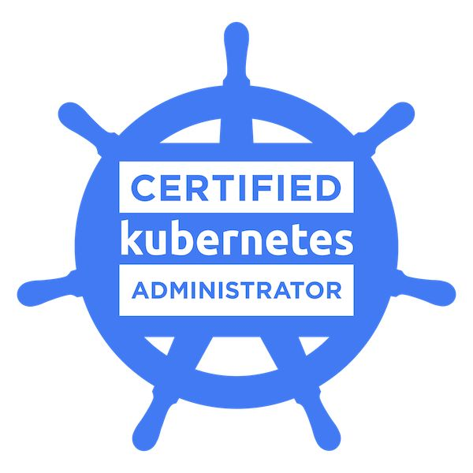

ramaditya.nukala@gmail.com | +91 9059111418 | +1 4053391050
Visitors: Loading...
Platform-focused DevOps Engineer with 8+ years of experience building CI/CD platforms, Kubernetes application runtimes, and infrastructure automation across enterprise environments.
Hands-on experience with Kubernetes, Docker, Terraform, GitLab CI/CD, Jenkins, Helm, Ansible, Vault, and Linux.
Currently expanding cloud expertise through hands-on AWS and Azure projects while applying infrastructure-as-code and cloud-native design principles.
Master's in Computer Engineering
Oklahoma Christian University (2016 – 2018)
Bachelor's in Mechanical Engineering
JNTU Hyderabad (2010 – 2014)

Linux Foundation
View Verified Badge